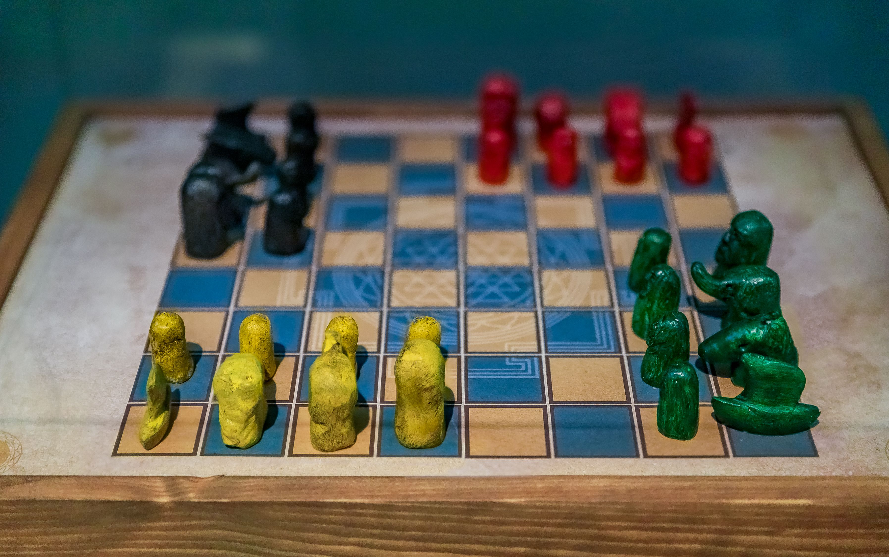
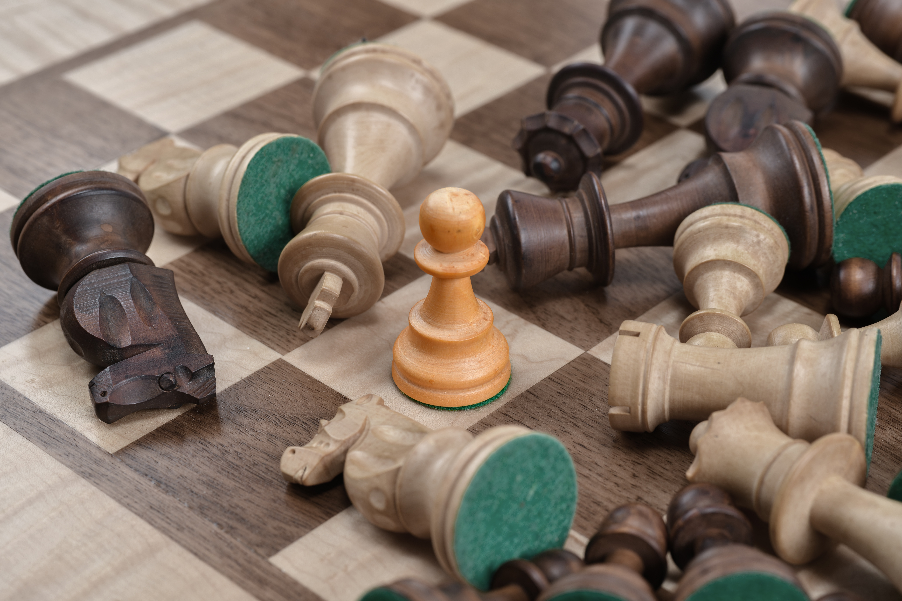

<!DOCTYPE html> 
<html lang="en" dir="ltr"></html>

<head>
  <meta charset="UTF-8">
  <link rel="stylesheet" href="style.css">
  <link rel="stylesheet" href="https://cdnjs.cloudflare.com/ajax/libs/font-awesome/5.15.2/css/all.min.css"/>
  <meta name="viewport" content="width=device-width, initial-scale=1.0">
  <meta http-equiv="X-UA-Compatible" content="ie=edge">
  <title>"History"</title>

  <nav>
    <div class="logo">Chess-I</div>
    <input type="checkbox" id="click">
    <label for="click" class="menu-btn">
      <i class="fas fa-bars"></i>
    </label>
   
    <ul>
      <li><a class="active" href="History.html">History</a></li>
      <li><a href="index.html">Home</a></li>
      <li><a href="Chess Game\Game.html">Play</a></li>
      <li><a href="Gallery.html">Gallery</a></li>
      <li><a href="Chess Clubs.html">Chess Clubs</a></li>
      <li><a href="Touranments.html">Touranments</a></li>
      <li><a href="About Us.html">About Us</a></li>
      <li><a href="Ranking.html">Ranking</a></li>
      <ul>
  </nav>


<style>

h1 
{

  text-align: center;
}


</style>

</body>


  <script>

  </script>
</head>
<h1>History</h1>


  <body>
  
<p>The origins of chess are controversial, as in India the origins is a game called Chaturanga, this was during the 7th century  between the years of 601 AD to 701.
  It`s also suggested that its China`s game of Xiangqi aka Chinese Chess.
 <br> In 1928, The World Chess Federation was established. (FIDE) <br>
  During this time efforts were made to make the Chess Federation International. <br>A Chess Olympiad where teams of chess players representing their countries started in 1924
  However, FIDE truly began to kick in in 1948 when the world champions for Woman, Juniors, Seniors and  Disabled was arranged. </br>
  </p>

<div class="container">
   
  
  > 
  
</div> 


  
